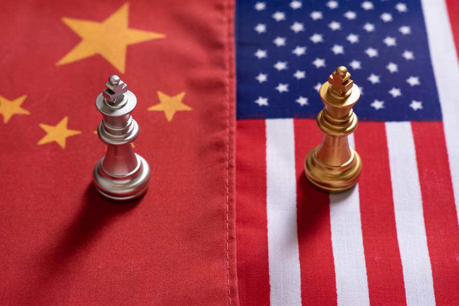

收录于合集

作品简介
【作者】 Hal Brands，约翰斯·霍普金斯大学高级国际研究学院（SAIS）亨利·基辛格特聘教授，战略与预算评估中心(CSBA)高级研究员，美国企业研究所常驻学者。曾任美国国防部战略规划特别顾问，并担任多个政府机构和智库的顾问学者。
【编译】 杨沛鑫（中国人民大学国际关系学院硕士研究生，国政学人编译员）
【校对】 吕紫烟
【审核】 姚寰宇
【排版】 陈旻雨
【美编 】马颖
【来源】 Brands, Hal. “The Lost Art of Long-Term Competition.” The Washington Quarterly 41.4 (2018): 31-51.
期刊简介
美国《华盛顿季刊》（The Washington Quarterly），是一本有关国际安全、外交关系以及政策制定的国际事务季刊杂志，由战略与国际研究中心（CSIS）创办，乔治·华盛顿大学艾略特国际事务学院及泰勒弗朗西斯集团共同承办。2019年期刊影响因子1.288，在95种国际关系期刊中排名第47。
长期竞争：消失的艺术
The Lost Art of Long-Term Competition
Hal Brands
内容提要
本文作者将研究的第一视角放在美国政府和决策者上，通过提出 长期竞争的“十二个原则” （12 bedrock principles of long- term competition），一一分析美国在中俄实力不断增长，世界格局发生变化的大背景下应该如何制定大战略（grand strategy）和外交政策以获取优势。作者认为，在目前的世界局势下美国没有很好地应对其他竞争大国的挑战，而这背后的深层原因是美国已经忘记了长期竞争这门“艺术”（The Lost Art of Long-Term Competition）。接下来，作者从十二个具体的方面具体分析了美国应该如何应对长期竞争，并寻找历史案例予以佐证。最后作者给出结论，认为虽然这12个长期竞争的原则转化为有操作性的实践是不容易的，但执政者也意识到了目前美国将会面对的大国长期竞争，所以美国必须要把握上述原则并制定相应对策，以取得竞争的胜利。
文章导读
01
背景及问题提出
在中俄两国国家实力不断发展的大背景之下，中美俄三边关系不可避免地走向地缘政治竞争和冲突。2018年的《国家安全战略》（National Security Strategy）中明确提出，中国和俄罗斯等大国是对美国利益的最大挑战。虽然美国政府关于大国竞争已有很多方案并已付诸实践，但是至今仍然没有做出一个有效的战略回应。造成这种情况的原因有很多，但其中最根本的是与其竞争对手相比，美国似乎处于失衡状态，它已经忘记了长期竞争的艺术。
何为长期竞争？作者认为 长期竞争是一个完整的战略，即一个横跨时间和空间，利用所有战略资源来实现一个长期目标的战略 。这种战略不要求给予对手压倒性的打击，而是追求在动态过程中创造非对称性优势，并向对手强加成本。但是在实施这个战略的过程中，实施国也必须承担战略失败的风险。历史经验证明，大国之间的长期竞争胜负将决定国家的兴衰与世界秩序的走向。美国历史上只经历过一次长期竞争，即美苏冷战，但目前美国又面临着进入大国竞争的风险。一个好的战略需要好的理论支持，因此美国如果想赢得今天的长期竞争，就需要从12个长期竞争的原则出发，来分析自己应该如何制定政策。
（译者按）在陈述接下来的文章内容之前，需要先说明12个长期竞争的原则分别是什么。
长期竞争的12个基本原则（12 Bedrock Principles of Long-Term Competition）
1. 拥有一个“胜利理论”(Have a Theory of Victory)
2. 利用非对称性优势（Leverage Asymmetric Advantage）
3. 站在成本曲线的右侧（Get on the Right Side of the Cost Curve）
4. 拥抱意识形态之争（Embrace the Ideological Competition）
5. 发起全领域综合竞争（Compete Comprehensively and Holistically）
6. 通过“多边行动””赢得“双边胜利”（Operate Multilaterally to Win Bilaterally）
7. 利用时间的战略意义（Exploit the Strategic Importance of Time）
8. 知己知彼百战不殆（Know Your Competition Intimately）
9. 将回顾反省与向前展望的能力制度化（Institutionalize a Capability to Look Forward as Well as Backward）
10. 理解长期竞争是对国家体系的一大考验（Understand that Long-Term Competition Is a Test of Systems）
11. 稳扎稳打，保持自己的步调（Pace Yourself）
12. 分清竞争与对抗的区别（Remember that Competition and Confrontation Are Not Synonymous）
02
**
**
**具体分析：十二条原则
**
（一）胜利理论
美国如果想要在长期竞争中获胜，首先必须拥有一个“胜利理论”，即指导一个国家认清自身想要获得什么以及如何获取的战略。这与国家的日常对外政策制定和反应不同，后者只是关注如何在某一具体问题获取具体的优势。历史上最出名的胜利理论当属美苏冷战时期乔治·凯南（George Kennan）的八千字电报，他确定了美国对苏政策的总目标，并提出了可供操作的执行方法。凯南遏制战略的成功之处在于，他从与苏联全面开战以及与苏联媾和之间找到了第三条道路（即遏制战略），使得苏联最终走向了衰落，也使美国实现了遏制战略的目标。
在后冷战时代，美国需要制定一个新的胜利理论，但目前美国想要实现的目标尚不明确。美国对中俄有很多选择可以采取，这些选择有各自的优缺点，包括不同程度的风险与投资，需要运用的手段与方法也不同。但问题在于，美国在尚未明确目标的情况下，就要开启一段漫长而危险的旅程。因此，美国需要厘清自身的长期战略目标，并明白如何实现这个目标。
（二）非对称性优势
要取得长期竞争的胜利，就需要在动态的互动中取得优势。需要注意的是，这种优势不是对每个威胁都做出对等的反应，而是迫使对手进入己方占据优势的领域，并利用这种非对称性优势。
历史上有很多这样的案例，雅典通过发展海军而不是陆军而获得相较斯巴达的不对称优势，英国也凭借其地理优势与经济力量，来支撑其海军发展，从而获取相较欧洲大陆强国的非对称优势。历史上的美国也曾经采取过这个策略，通过发展科技而不是传统军力来获取冷战时期对苏的竞争优势。如今，中俄也在谋求本国的非对称战略，如中国运用经济手段扩大自身在亚太地区的地缘经济影响力中俄都避免陷入寻求与美国在军事力量上相匹敌的陷阱，而是通过发展反介入/区域拒止（A2/AD）的能力来获取特定区域下对美的军事力量优势。
因此，美国必须重新确定并利用自身的非对称性优势。首先，美国可以利用其联盟和伙伴关系给中苏制造意外威胁；其次，美国还可以利用政治制度上的差异来获取意识形态方面的非对称性优势；同时，在军事力量方面，美国可以利用其在海底战争和无人系统方面的非对称性优势。而所有这一切的关键就在于美国需要认真考虑自己具备非对称性优势的领域，并充分利用这些优势。
（三）成本曲线
第三个原则被称为“站在成本曲线的右侧”，即诱导对手国对某些经济领域进行针对性投资，以提升对手的成本、转移对手的资源，从而削弱对手的实力。
一战前的英国以及冷战时期的美国都采用了这种战略。然而，从目前来看，美国经常处于成本支出方，中俄都可以运用低成本的方法来实现地缘政治目的，而美国则陷入了成本困境。有一些方法可以让美国重新获得成本优势，例如对中国进行岛链封锁、在台湾部署反舰武器等，使中国成为高成本的一方。此外，如果防御网络攻击和政治战争的难度和成本较高，美国可以通过发动政治战争来扭转不利局面。因此，美国要想获取长期竞争的优势，关键在于重新成为施加成本的一方而不是承受成本的一方。
（四）意识形态冲突
第四条原则是运用意识形态竞争，美国应该充分利用意识形态之争所能带来的优势。
纵观整个历史，对立的意识形态往往会加剧大国之间的地缘政治冲突。在与其他大国的竞争历史中，美国的对外政策不仅仅是对地缘政治的反应，还出于一种保卫民主的意识形态狂热。因此，进入大国长期竞争之后，美国应该强化其在意识形态方面的输出，其他国家对美国的自由民主制度也持较为欢迎的态度。
作者认为这一条原则非常适合大国长期竞争的环境，通过在国内外推动民主制度与价值观的发展与推广，美国可以在绝大多数领域下都取得竞争优势。
（五）全面竞争
第五条原则是长期竞争必须是全面的竞争。美国赢得冷战的原因在于它当时几乎采取了全部措施来遏制苏联。而今天的美国在面对竞争对手时，却显得有些手段匮乏。
从目前的情况来看，包括俄罗斯在内的美国竞争对手都通过各种手段强化竞争能力，但美国却没有形成与之匹配的全领域竞争能力。阻碍美国提高全面竞争能力的一大要素是美国的官僚体制以及部门之间的相互竞争。很多美国部门将部门利益而不是国家利益放在部门政策制定的首位。
（六）多边行动
第六个原则是运用多边力量解决双边问题。一个国家长期竞争的对象往往是一个特定的国家，但是竞争发生的大背景却是全球层面的。有效的竞争需要设置有利的环境，以便限制竞争对手的选择，同时为自己留有更多选择余地。
在欧洲历史上的大国竞争中，胜利的国家往往是盟友更多的那一方，而在外交上被孤立的一方往往最终落败。作者指出，在与中俄的竞争时，美国需要在亚洲寻找更多的伙伴与盟友，从而建立安全和经济网络，赢得与中俄的大国竞争。作者认为美国所构建的盟友体系是与其他大国竞争时的一大利器，但目前美国政府没有很好地把握住这一点。
（七）利用时间
第七条原则是获取时间优势，根据感知到的机会与威胁大小来加快或减慢与对手的竞争速度，从而将节奏把控在自己手中。
冷战期间，基于时间的竞争策略是美国战略的核心。在宏观层面，美国选择遏制战略的原因是它占有时间优势。具体而言，美国官员常常通过观察战略平衡随时间的走向来制定具体的政策。
因此，作者认为可以通过解读对手如何看待和利用来判断对手的政策走向，从而获得长期竞争的胜利。
（八）知己知彼百战不殆
第八个原则是知己知彼百战不殆。只有了解竞争者的世界观、决策与行为倾向，才能战胜对手；只有抓住对手的弱点和恐惧心理，才能加以利用。而这需要智力与经济方面的持续性投入。
冷战期间，美国培养了大量的苏联问题专家，这些专家为美国在冷战后期的政策制定提供了充足的信息。在中美竞争的大背景下，美国应该培养更多懂汉语的中国问题专家；但遗憾的是，目前美国还没有真正培养起这类人才。9·11事件将美国的注意力与战略资源转移到中东地区，而忽视了大国竞争。作者认为如果美国真的想在与中俄的长期竞争中获胜，就需要在专业人才培养方面投入更多。
（九）回顾与展望
这是一种全面审视局势的能力，需要美国回顾历史信息并放眼未来，考虑自己的长期目标与计划、对手可能的意图与反应以及外在的干预变量。这不是预知未来，而是尽可能根据现有信息提升自身能力，为可能出现的情况做好准备。然而，长期竞争也注重回顾过去、评估迄今的效果，并在必要时做出调整。
这项能力的关键在于将其制度化，但仅仅将制度化也是不够的，同时还需要将这种系统性的审视转化为切实可操作的具体计划。
（十）增强体系
长期竞争是对治国方略的考验。 第十项原则要求国家拥有可以适应长期竞争的完备系统，从而能够汲取政治、经济与社会资源，并将这些资源转化为国际舞台上的权力。但国家机器不能为了实现短期目标而过度汲取资源，否则会破坏长期的发展基础。
目前，美国政府实行的部分政策是不合适的，如禁止移民、贸易战等，这些最终都会损害美国的长期竞争优势。因此，需要通过发展教育、加强基础设施建设等来增强美国在长期竞争中的优势。
（十一）保持正确步调
长期竞争的时间特点要求国家按照自己的步调发展，这是第十一条原则。
历史上由于战略透支而走向衰败的国家非常多，如伯罗奔尼撒时期的雅典、拿破仑领导下的法国以及冷战时期的苏联都是很好的例子。在长期竞争中，克制自己与约束敌人同等重要。长期竞争要求对自己有高度清晰的认知，不仅需要设置优先目标，还需要知道应该何时停止。但作者同时也承认，这条原则是很难实现的。
（十二）竞争而非对抗
长期竞争在一定程度上需要坚定的决心与严明的纪律；它需要智取、威慑和胁迫对手。长期竞争的确需要在一些关键领域承担风险，但这并不意味着陷入对抗的漩涡，反而可以降低战争爆发的概率。
在冷战时期，美苏虽然在各个方面进行竞争，但同时也签订了各项条约来限制双方行为，尽可能将战争的风险降到最低。美苏双方通过建立机制来保持沟通顺畅、控制紧张局势。与此同时，冷战还说明了大国之间并不一定会走向军事对抗。从今天来看，只有在贯彻长期竞争的同时保持沟通线路的顺畅，为冲突降级提供渠道，才能使美国的优势最大化，并且获取最终的和平。
03
结论
虽然作者在文中提出了12个长期竞争的原则，但是将其转化为可操作性的实践是不容易的。美国目前面对中俄两大竞争对手，而相比俄罗斯，中国是一个更长久、更微妙且强大的竞争者。执政者也意识到了目前美国将会面对新的地缘竞争，所以美国必须要重新把握长期竞争的基本原则，以取得竞争的胜利。

译者评述
本文成文于2018年，作者认为中国和俄罗斯是美国面对的最大威胁，而在其提出的长期竞争“十二条原则”中，作者从多个方面对美国如何取得大国竞争的胜利提出了建议。不难看出，作者所定义的大国竞争发生在政治、经济、意识形态以及文化的多个方面，美国只有在这些领域共同发力才能够击败竞争对手。本文进行对外政策研究的对象是非常明确的，作者作为前美国国防部战略规划特别顾问，对美国的对外政策“应然”做了详尽而具体的分析。虽然在其所设置的美国大战略中充满着对峙和非合作博弈的色彩，但是通过这篇文章，我们可以看出美国决策精英对于美国在大国竞争背景下的战略构思。
从目前来看，中美两个大国之间已经不属于合作，而是走向了竞争性共存的关系。受时间的限制，作者在文章中认为特朗普政府没有能够很好地执行大国竞争的大战略。但2018年中美贸易战表明，美国的对外政策风向，特别是对华政策风向发生了巨大的调整。从大战略的角度来看，美国的战略焦点从反恐调整到了应对以中国为代表的大国竞争上，地缘战略焦点从中东转移到了印太区域。与此同时，美国开始制定具体的对华遏制战略，从南海的“自由航行”到对中国实施数轮经济制裁，从加强对台军售到利用新疆人权问题大打舆论战。
可以说，在军事、政治、经济甚至社会文化方面，美国都形成了针对中国的“全政府”竞争策略。驴象两党对华态度的一致化使得美国做好了大国长期竞争的准备，而今天再回头去审视这篇文章时，可以重新反思美国对华的大战略构思和具体战略方法。而中国学者在研究今天的美国对华战略时，一定要注意到美国对华根本战略方向的转变，这一点并不是某位总统及其政府的政治遗产，而是美国适应新时代国际政治结构变化所做出的系统性战略调整。如果拜登此次成功当选总统，其出于自身党派利益和国家整体利益的考虑，会重构其所领导的政治秩序，同时也会推动中美关系的回溯，但我们不能够因此抱着侥幸心理期待拜登上台后的美国会对华产生根本性的态度变化。美国如今已经进入了与中国的长期竞争状态，因此我们仍然需要做好长期处于中美大国竞争的准备。
参考文献
[1] Shambaugh, David. “US-China Rivalry in Southeast Asia: Power Shift or Competitive Coexistence?.” International Security 42.04 (2018): 85-127.
[2] 左希迎：“威胁评估与美国大战略的转变”，载《当代亚太》2018年第4期，第49页。
文章观点不代表本平台观点，本平台评译分享的文章均出于专业学习之用, 不以任何盈利为目的，内容主要呈现对原文的介绍，原文内容请通过各高校购买的数据库自行下载。
**
**
**
**
**
**
添加 “国小政”微信
获取最新资讯


国政学人
支持学术公益与知识传播
微信扫一扫赞赏作者 __赞赏
已喜欢，对作者说句悄悄话
取消 __
发送给作者
发送
最多40字，当前共字
上一页 1/3 下一页
长按二维码向我转账
支持学术公益与知识传播
受苹果公司新规定影响，微信 iOS 版的赞赏功能被关闭，可通过二维码转账支持公众号。